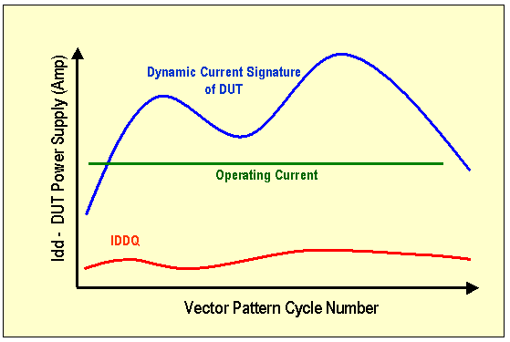
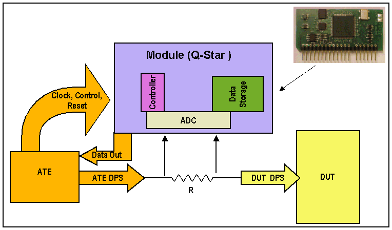
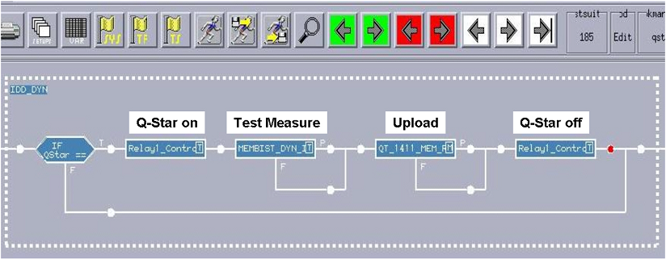

Example of Incorporating an External Module into V93000 Programs
To test the behaviour of DUTs, it is often useful to measure a signatur of its dynamic current (IDD) while in operation, rather than just a static current measurement (IDDQ).
This information can be very useful to detect devices which are not operating correctly.
One difficulty with this can be obtaining very accurate measurements. The reason for this is that the tracks on the DUT board and other spurious effects can degrade the measurement.
To get around this, an external module placed close to the DUT on the DUT board could be used for measuring the dynamic current signature of the DUT.
The following figure illustrates an arbitrary dynamic current signature for a DUT under load.

The following figure shows how such an external module used for dynamic current measurement (Q-Star)) would interface with the DUT and the Tester.

In this example, the DUT board is designed to accept the Q-Star module as a plug-in component. The module is located as close as possible to the DUT, to minimize any external interference. It measures the current across load resistors in series with the DUT.
It does not matter whether the module has its own vector pattern, timing, and levels as these can be set up individually if the module's pins are defined in a separate port.
When the measurements are taken, the data is stored in the Q-Star module and needs to be uploaded to the system controller. This is done using a Digital Capture Test Method where the Q-Star's output is connected to a digital channel.
The uploaded data is processed serial to parallel, then binary to decimal, normalized, recorded for further processing and the extraction of the current signature. The raw process is performed using a Test Method.
Test Flow
The Testflow for this example basically consists of the device test program with the Q-Star module measurement segment enabled on demand using a test flow flag.
The sequence of execution consists of a relay setting to apply power to the module, the parallel execution of the device test label and the Q-Star vector for the purpose of activating and recording measurements on the module, followed by the data uploading from the Q-Star module (a DUT label is not executed at this time) and data processing, and a final relay setting to power down the module.
This is illustrated in the following figure.

Functional changes
- Introduced before SmarTest 6.3.2